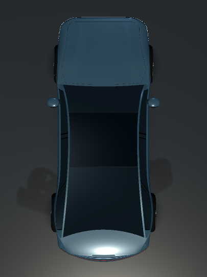
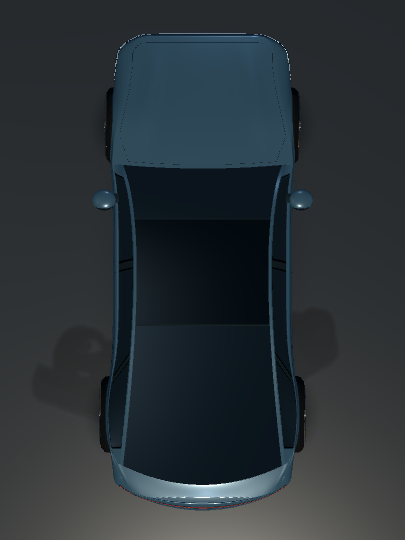
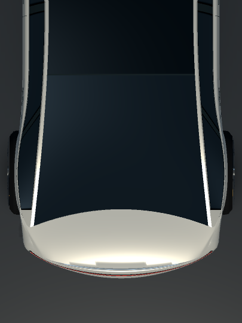
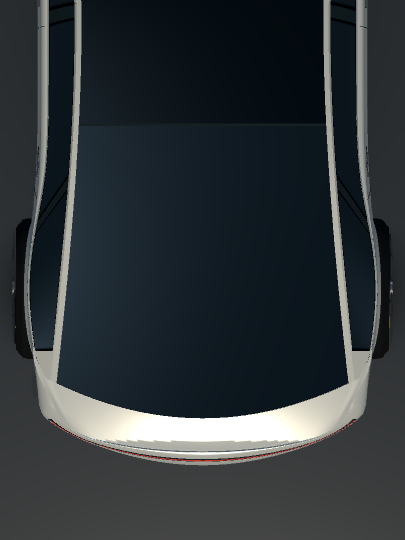
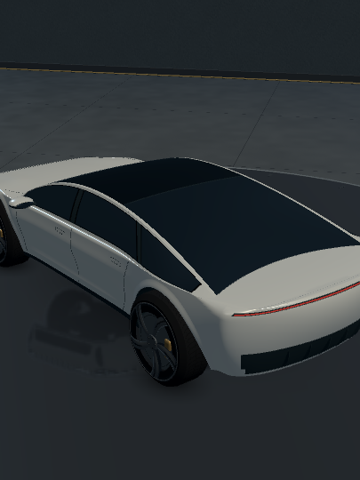
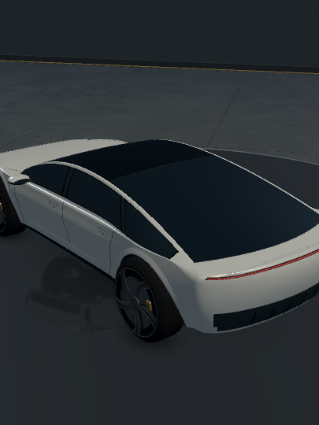

The lower glass edge now bows toward the rear, following the owner's red guide. The glass has a gentle transverse crown, and the painted deck shares the same curved boundary. These are native renders of the actual prepared model with matched cameras and lighting.






Desktop Mobile render · Validation, commands and hashes. Device testing and owner appearance acceptance remain.